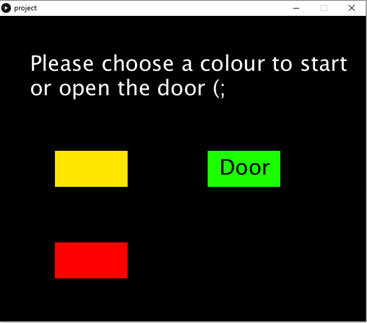
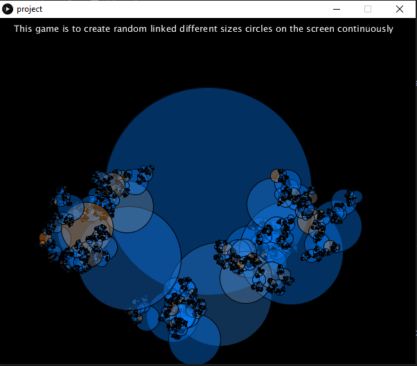
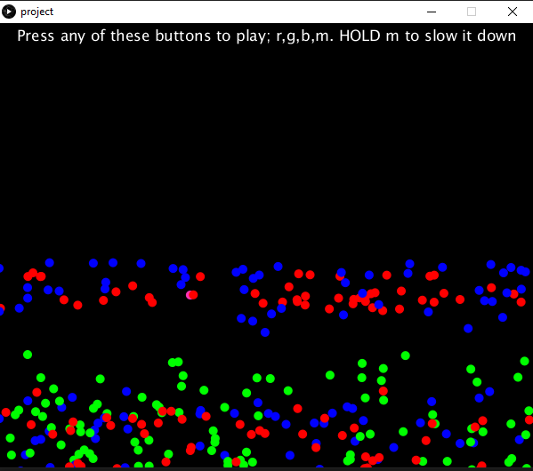

Mohamed EL SheikhI am a 21 years old first year Computer Science student at City, University of London. On the 28th of Sep i had my first lecture with bootcamp. We have used Processing to learn the fundamentals/basics of programming. |
||
|
|
||
Bootcamp 2020: Bouncing Ball, Recursive, SoundMy first programming project, concluding the 2 week Programming Bootcamp at City (2020). This Processing project demonstrates a comprehensive understanding of the use of sounds, arrays, functions , calsses, loops, randomness and many more. I have created 3 different application in one application. I created a menu in that have 3 box, whenever someone chooses one box it goes to the application that was coded to this specific square. The "Red box" application is a bouncing ball game. I have used a built-in function called "KeyPressed" to set some keys to produce more balls when someone clicks these keys. I have used "For" loop to make it produce more ball when someone chooses to press; r,g,b,m. If someone HOLDS "m" the program will produce more balls in different colours and slows down the speed of the game. The "Yellow box" application is a recursive graphic application. In this application, i have used recursion which functions call themselves at the end of its block until there is a condition to stop it. It creates random circles at random places on the screen. The "Green box" application is a sound effect game. In this application, i have used Sound which is a sound library that allows us to add any sound or audio to our applications. When someone clicks one the green box it plays a sound that i have implemented Check out the code on Github: https://github.com/Mohamedelsheikh-9/Mohamedelsheikh-9.github.io | ||
|    | ||